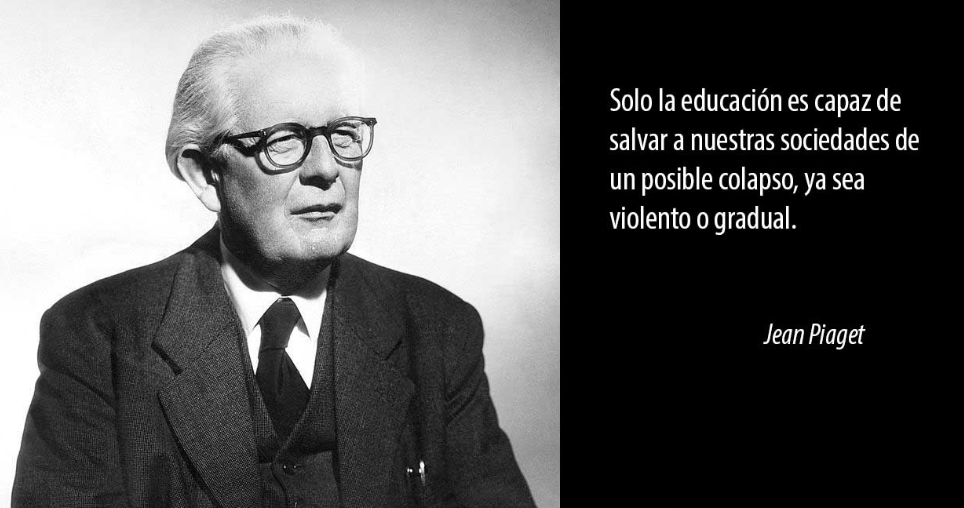

"El padre de la Psicología Evolutiva"
Jean Piaget es considerado el padre de la epistemología genética y uno de los más grandes estudiosos del proceso humano de aprendizaje.
Descripción general de la vida y obra de Piaget
Jean Piaget fue un psicólogo y epistemólogo genético suizo. Considerado como el padre de la psicología evolutiva porque fue el primer psicólogo que estudió, de manera profunda y con mucho rigor, la evolución psicológica de las personas; de esta observación nace la Teoría del Desarrollo Cognitivo, por la que es famoso Jean Piaget. La misma analiza como los niños se desarrollan intelectualmente a lo largo de la niñez. La teoría de Piaget tuvo una tremenda influencia en el surgimiento de la psicología del desarrollo como un subcampo distintivo dentro de la psicología y contribuyó en gran medida al campo de la educación. También se le atribuye el mérito de ser pionero de la teoría constructivista, que sugiere que las personas construyen activamente su conocimiento del mundo a partir de la interacción entre sus ideas y experiencias.
Breve biografía
Jean William Fritz Piaget Jackson nació el 9 de agosto de 1896 en Neuchâtel, Suiza. Fue el primogénito del profesor de literatura medieval Arthur Piaget y de Rebecca Jackson, hija del propietario de la primera fábrica de acero al crisol de Francia.
Su infancia transcurrió en un ambiente académico, adquiriendo y aprendiendo de su padre una mentalidad crítica y analítica así como el gusto por la escritura y la fascinación por los seres vivos.
Ya desde la infancia Piaget manifestó un gran interés por la mecánica, la ornitología, los moluscos y la biología en general. Entró en el Instituto Latino de su localidad. Mientras cursaba secundaria a los diez años de edad, elaboraría y enviaría un artículo sobre el gorrión alpino a una revista de historia natural de su localidad, siendo esta su primera contribución y publicación científica.
Años de formación
Acabada la educación secundaria Piaget entraría a estudiar en la Universidad de Neuchâtel, licenciándose en la carrera de Ciencias Naturales y doctorándose en 1918 con una tesis relativa a la malacología.
Tras ello decidiría estudiar en la Universidad de Zurich, donde durante un semestre estudió y empezó a adquirir interés por psicología a partir de las obras de Freud o Jung. Empezó a trabajar en laboratorios de psicología en dicha ciudad e incluso llegaría a realizar dos publicaciones al respecto.
Vinculación con la psicología infantil
Durante ese mismo año 1919 Piaget se trasladaría a París como profesor de psicología y filosofía en La Sorbonne, conociendo y trabajando con gran cantidad de importantes psicólogos como Binet o Bleuler. Entraría también a trabajar en una escuela dirigida por Binet y Simón como profesor, en Grange-aux-Belles. Allí empezaría a notar diferencias entre los patrones de respuesta de adultos y niños, algo que le llevaría a pensar en la existencia de diferentes procesos atribuibles a ciertos momentos evolutivos.
Poco tiempo después, en 1920, formaría parte del grupo que perfeccionó la prueba de inteligencia de Stern detectando asimismo errores consistentes en las respuestas infantiles. Junto a Theodore Simon empezaría a explorar la inteligencia y razonamiento infantiles.
Durante el año 1921 publicaría un primer artículo sobre la inteligencia, el cual provocaría que recibiera una oferta de trabajar como director del Instituto Rousseau de Ginebra. Con esta oferta, en la que algo que le llevó a volver a su país de origen. Desde su puesto iría elaborando diversas obras en que trabajaba el razonamiento, el pensamiento o el lenguaje infantil. Su participación académica siguió creciendo, asistiendo también en 1922 al Congreso de Psicoanálisis de Berlín (donde conocería personalmente a Freud).
En 1923 se casó con Valentine Châteney, teniendo tres hijos con ella. Su paternidad sería importante no solo a nivel personal sino también a nivel profesional, ya que sería la observación y análisis del crecimiento y desarrollo de sus hijos lo que (junto a la influencia de diversos autores anteriores y la realización de las diferentes estudios antes mencionados), le conduciría a la elaboración de su obra más conocida: la teoría cognitivo-evolutiva en la cual expondrá los diferentes estadios de desarrollo y la teoría constructivista.
Jean y su esposa Valentine tuvieron tres hijos, a los que Piaget estudió durante sus primeros años.
En 1925 trabajaría como profesor de filosofía en la Universidad de su ciudad natal, a pesar de seguir en el Instituto Rousseau. Asimismo, junto a su esposa iría observando y analizando el desarrollo de sus hijos. Durante el año 1929 volvería a Ginebra para trabajar en la universidad de dicha ciudad como profesor de psicología y historia de la ciencia. Posteriormente pasaría a la Universidad de Lausana. Mientras ejercía en esta última como profesor de psicología y sociología, en 1936 sería nombrado director del International Bureau of Education de la UNESCO. En 1940 empezaría a estudiar aspectos como la percepción, trabajando aspectos como el desarrollo de la percepción espacial.
Para 1950 Piaget llevaría a cabo la elaboración de la epistemología genética, otra de sus grandes contribuciones, en la que trabajaba las estructuras cognitivas y los cambios evolutivos e históricos de la relación conciencia-entorno. Esta contribución conduciría a la generación del concepto esquema cognitivo y su teoría constructivista en que valoraba la relación biología-ambiente en la formación del pensamiento.
Cinco años más tarde fundó y sería nombrado director del Centro Internacional de Epistemología Genética, cargo que ostentaría hasta su muerte. Piaget recibiría a lo largo de su vida numerosos títulos y doctorados honoris causa, así como diversos premios internacionales por sus contribuciones científicas.
Su muerte y legado
Jean Piaget falleció a los 84 años de edad el día 16 de septiembre de 1980, en Ginebra, tras alrededor de diez días hospitalizado. Su deceso es un acontecimiento de gran relevancia, siendo su legado y su contribución a la psicología una de las más extensas y relevantes del último siglo.
Las teorías de Piaget continúan estudiándose en las áreas de la psicología, la sociología, la educación y la genética. Su trabajo contribuyó a nuestra comprensión del desarrollo cognitivo de los niños. Piaget ayudó a demostrar que la infancia es un período único e importante del desarrollo humano.
Biografía: Oscar Castillero Mimenza. (2018, junio 28). Jean Piaget: biografía del padre de la Psicología Evolutiva. Portal Psicología y Mente. https://psicologiaymente.com/biografias/jean-piaget